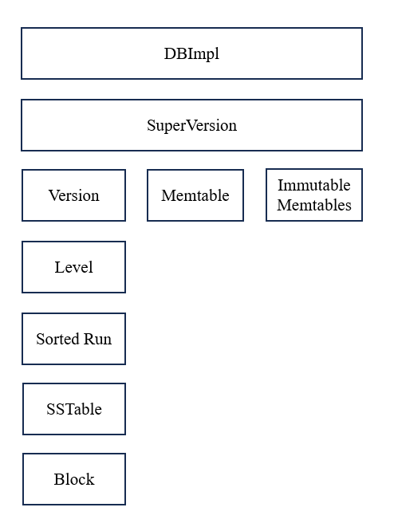
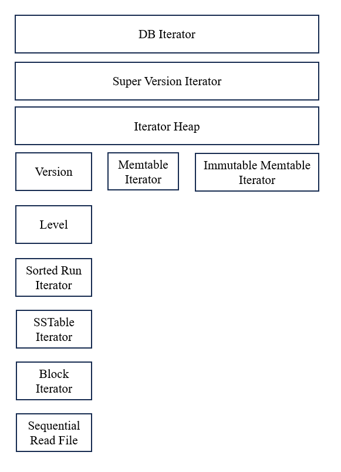

LSM Basic
The architecture of the LSM-tree in Wing is as follows.

DBImpl: At the highest level, the DBImpl is the primary component responsible for interacting with users. It references the most recent SuperVersion of the database.
SuperVersion: It includes a MemTable, a list of immutable MemTables and the on-disk LSM-tree Version, which together represent the current state of the database.
MemTable: An in-memory ordered data structure. It is flushed to disk when it reaches its capacity.
Version: An array of levels, representing the on-disk LSM-tree.
Level: It is composed of one or more sorted runs.
SortedRun: It can be viewed as a sorted key-value array which is divided into several SSTables.
SSTable: It is composed of data blocks, an index, bloom filter and metadata.
Block: It stores records.
Record Format
Records in the database are structured as (key, seq, type, value) tuple, where seq denotes the timestamp (or sequence number) and type denotes the record type. A record with type=RecordType::Value represents the key-value pair at the timestamp seq. When type equals to RecordType::Deletion, the record indicates that the key has been marked for deletion at the timestamp seq.
(key, seq, type) is called the internal key of record (see storage/lsm/format.hpp) because seq and type are invisible to users. We can define a comparing function to sort them: for two internal keys (key0, seq0, type0) and (key1, seq1, type1), the former is smaller than the latter if and only if key0 < key1 or key0 == key1 && seq0 > seq1. With this comparing function, for (key, seq), the newest record with the same key and a sequence number seq0 <= seq is the first record (key0, seq0) with (key, seq) <= (key0, seq0).
Get
DBImpl::Get(key, seq, &value_str) function is designed to retrieve records from the database. It looks for the first record (key0, seq0, type0) satisfying key0 == key && seq0 <= seq. If the record is a record with type RecordType::Deletion or no such record exists, the function returns false, indicating the requested value is not found. If a record with type RecordType::Value is found, the function returns true and copies the associated value into value_str.
The process of Get is:
-
Check if MemTable has the record. If not, check if immutable MemTables have the record. It checks from the newest immutable MemTable to the oldest immutable MemTable. It stops once it finds the record. If they do not have the record, proceed to check the on-disk LSM-tree.
-
Check if Level 0 has the record, then Level 1, 2, and so on. For each level, it performs a binary search to find the SSTable that possibly has the record. Then it queries the bloom filter. If further inquiry is necessary, it performs a binary search on the SSTable's index to find the data block. It reads the data block from the disk, and performs a binary search to find the record.
Put and Delete
DBImpl::Put(key, seq) creates a new record (key, seq, RecordType::Value, value) and DBImpl::Del(key, seq) creates a new record (key, seq, RecordType::Deletion). Once a record is created, it is inserted to the MemTable. For convenience, a lock is employed to ensure that only a single writer can perform operations at any given time.
If the MemTable reaches its capacity, it creates a new superversion and moves the MemTable to the immutable MemTable list and create a new MemTable.
The database has 2 threads to persist the data to disk: the flush thread and the compaction thread. The flush thread is awakened whenever a new immutable MemTable is created. It flushes the immutable MemTables to the first level (Level 0) of the LSM-tree. Every time an immutable Memtable is flushed, the compaction thread is awakened. It acquires new compaction tasks through CompactionPicker::Get. Once it has tasks, it proceeds to execute them and subsequently updates the superversion.
Scan
The database supports range scans. DBImpl::Begin() returns an iterator positioned to the beginning of the data, while DBImpl::Seek(key, seq) returns an iterator positioned to the first record (key0, seq0, type0) satisfying (key, seq) <= (key0, seq0).
Scan operations are performed in a snapshot. When a DBIterator is created, it stores the current sequence number. It can only see the records with sequence number smaller than the stored sequence number.
The architecture of iterators is as follows. BlockIterator is the iterator on data blocks. SSTableIterator is the iterator on SSTables and contains a BlockIterator. SortedRunIterator is the iterator on sorted runs and contains a SSTableIterator. SuperVersionIterator is the iterator on superversions, it contains all the SortedRunIterators and MemTableIterators using IteratorHeap, which maintains the record with the minimum internal key by maintaining iterators in a heap. There is no LevelIterator or VersionIterator because it is inefficient to maintain two IteratorHeaps. The DBIterator operates at the highest level, merging records with the same key and skipping the keys which are marked deleted.

The interfaces of Iterator can be found in storage/lsm/iterator.hpp. Here is an example of usage:
DBIterator it = ...; // create the iterator
while (it.Valid()) {
// Read key and value of the current entry
auto key = it.key();
auto value = it.value();
// output key and value
DB_INFO("{}, {}", key, value);
// Move to the next entry
it.Next();
// After moving, key and value may be invalid because they are `Slice`s,
// i.e. references to a internal buffer in `it`.
}